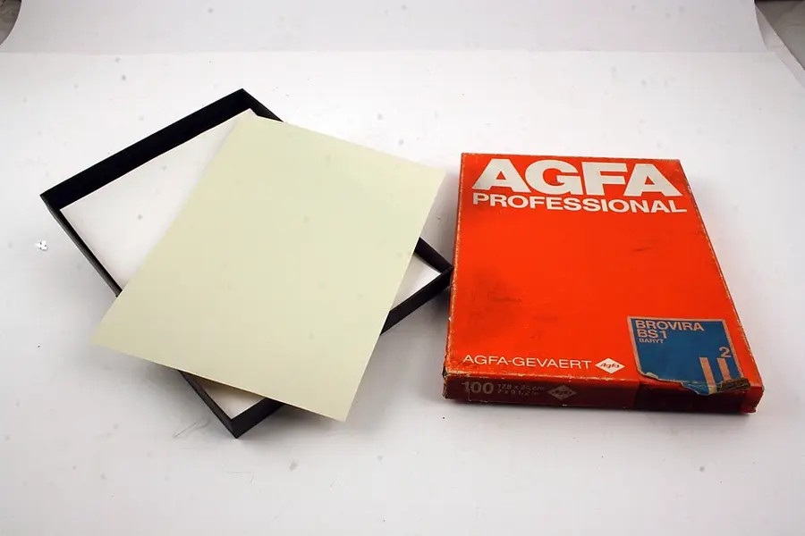

대표 로고대표 브랜드 마크
대표 로고대표 브랜드 마크아그파게바트 Agfa-Gevaert
아그파게바트(Agfa-Gevaert)는 이미지를 만들고 처리하고 재생산하는 아날로그·디지털 제품과 시스템을 개발·제조·배포하는 유럽의 다국적 이미지 기술 기업이다. 본사는 벨기에에 있다.
최종 업데이트
아그파게바트는 어떤 브랜드인가
아그파는 이미지를 만들고 처리하고 재생산하는 아날로그, 디지털 제품과 시스템을 개발하고 제조하고 배포하는 유럽의 다국적 기업이다. 건강 관리, 그래픽, 물질이라는 세 개의 주된 부서를 둔 이미지 기술 회사이며, 본사는 벨기에에 있다.
주식은 유로넥스트에 AGFB, 프랑크푸르트에 AGE라는 코드로 올라 있다. 과거에는 아그파 필름과 카메라가 잘 팔리는 소비자 제품이었고, 사진용 필름 제조사로 후지필름, 코닥과 함께 세계 상위 3곳에 들어 유명했다.
그러나 디지털 카메라가 보급되면서 판매액이 줄어들었고, 2004년에 소비자 이미징 부문을 매각했다. 2007년 4월 말에는 계획했던 세 개의 독립된 회사로의 분할이 더 이상 실현되지 않는다고 선언했다.
아그파게바트는 어떻게 시작되고 성장했나
아그파게바트는 1867년 독일 베를린에 세워진 약품사 Agfa와 1894년 벨기에 안트베르펀에 세워진 인화지 제조사 Gevaert가 합쳐져 탄생한 회사이다. 두 회사는 제2차 세계 대전 후인 1964년에 사업을 통합했다.
통합 이후 사진용 필름 제조사로 알려지며 후지필름, 코닥과 함께 세계 상위 3곳에 들어갔다. 1981년부터 1999년까지는 독일의 종합 화학 약품 제조사 Bayer의 자회사였다.
아그파게바트의 브랜드 아이덴티티는 무엇인가
아날로그 사진 필름 시대의 세계 상위 3대 제조사였다가 디지털 전환 이후 건강 관리, 그래픽, 물질 중심의 이미지 기술 회사로 바뀐 유럽 기업이다.
아그파게바트의 대표 제품과 서비스는 무엇인가
아그파는 이미지를 다루는 아날로그 및 디지털 제품과 시스템을 개발하고 제조하고 배포한다. 사업은 건강 관리, 그래픽, 물질이라는 세 개의 주된 부서로 구성된다.
과거에는 아그파 브랜드의 필름과 카메라가 소비자 제품으로 잘 팔렸다. 자기 테이프, 복사기, 스캐너를 비롯한 다양한 제품도 생산하고 있다.
소비자용 필름 사업은 매각되어 현재는 다른 회사들이 아그파 브랜드의 흑백 필름과 인화지, 메모리 카드를 맡고 있다.
아그파게바트는 지금 어떤 상태인가
2004년 11월에 필름 부문이 새로 설립된 Agfa-Photo에 매각되었다. Agfa-Photo는 아그파게바트로부터 상표를 빌려 필름을 생산했으나 2005년 5월 27일 파산을 신청했다.
이후 독일의 HANS O. MAHN & CO.
KG가 아그파 브랜드의 흑백 필름과 인화지 사업을 유지하고 있고, 독일의 Lupus Imaging & Media가 아그파 브랜드의 필름과 메모리 카드를 판매하고 있다.
아그파게바트 로고는 어떻게 변해왔나
대표 로고대표 브랜드 마크사진으로 보는 아그파게바트의 역사

자주 묻는 질문
아그파게바트는 어느 나라 브랜드인가요?
아그파게바트는 독일의 기술·전자 브랜드입니다.
아그파게바트는 언제 설립되었나요?
아그파게바트는 1873년 설립되었습니다.
아그파게바트의 브랜드 아이덴티티는 무엇인가요?
아날로그 사진 필름 시대의 세계 상위 3대 제조사였다가 디지털 전환 이후 건강 관리, 그래픽, 물질 중심의 이미지 기술 회사로 바뀐 유럽 기업이다.
아그파게바트의 대표 제품은 무엇인가요?
아그파는 이미지를 다루는 아날로그 및 디지털 제품과 시스템을 개발하고 제조하고 배포한다.
아그파게바트는 현재 어떤 상태인가요?
2004년 11월에 필름 부문이 새로 설립된 Agfa-Photo에 매각되었다.
아그파게바트의 본사는 어디에 있나요?
아그파게바트의 본사는 Mortsel에 있습니다(위키데이터 기준).
아그파게바트의 모기업은 어디인가요?
아그파게바트의 모기업은 파르벤 이익공동체입니다(위키데이터 기준).
출처와 검증
아그파게바트 관련 참고: 공식 웹사이트 · 위키데이터 Q309245 · 한국어 위키백과 · 영어 위키백과. 브랜드명은 한글과 원어를 함께 표기하되 데이터에 없는 표기는 만들지 않습니다. 기원 국가·설립연도는 검수된 정의문에서 확인된 값을 우선하고, 없을 때만 공식 웹사이트 URL이 일치하는 위키데이터 개체의 값을 씁니다. 탄생일의 월·일은 위키데이터, 위키백과 정보상자, 본문 가운데 같은 연월로 확인되는 값만 싣고, 출처끼리 다르면 싣지 않습니다. 위키데이터 값은 2026-11-11 기준입니다.